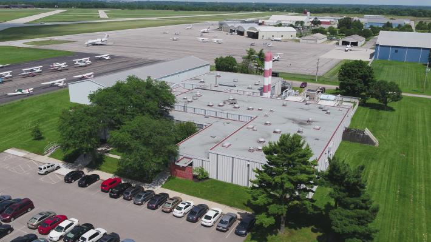
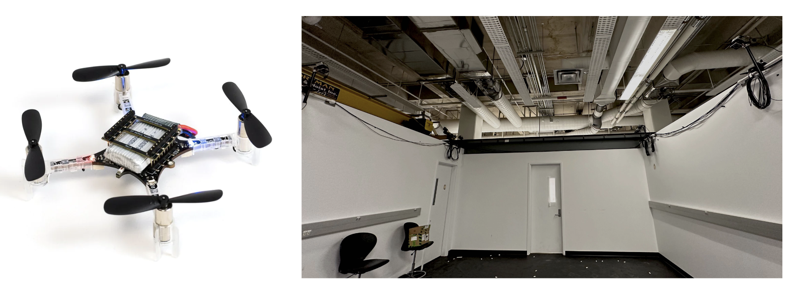
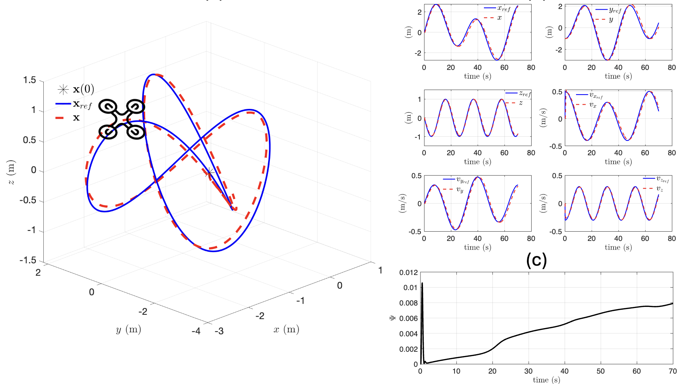
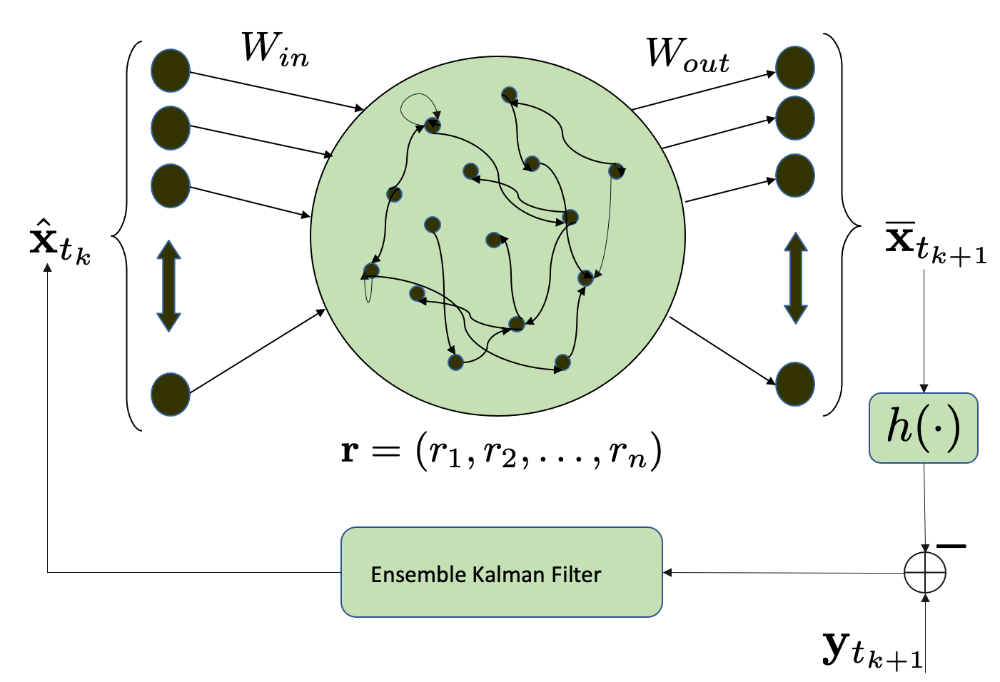
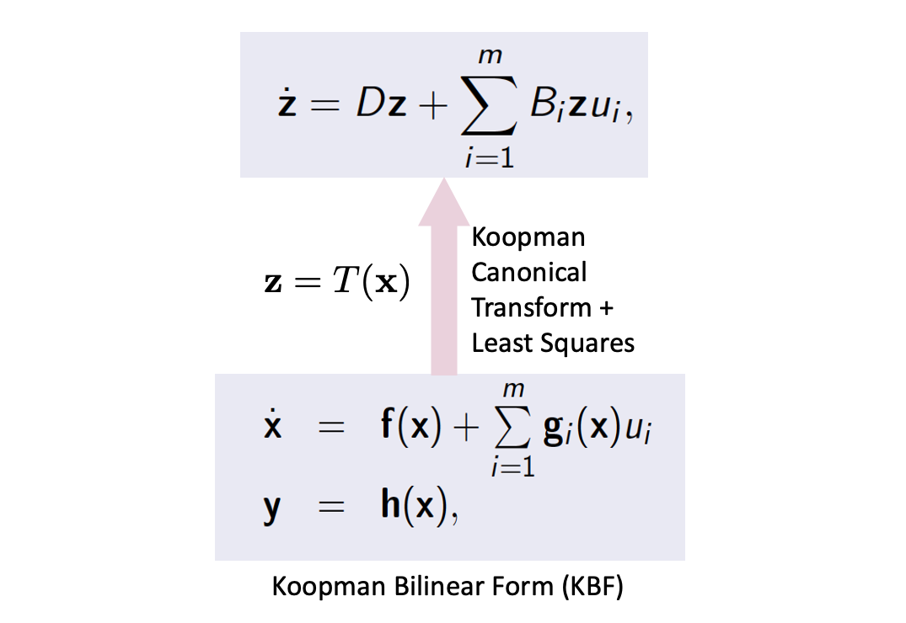

Research Facilities and Projects
Facilities
Aerospace Research Center
|  | The Aerospace Research Center advances aerospace research at The Ohio State University by leading interdisciplinary research focused on aerospace technology. It is located near the OSU airport and has several facilities including:
|
SOAR Lab space
|  | The SOAR Lab located at W078 Scott Laboratory has the following facilities:
|
Current projects
Reinforcement learning-based path planning for quadrotors
 |
Project description: The objective of this project is to combine reinforcement learning with traditional motion planning that enables a fleet of multirotor drones to autonomously navigate and complete missions. Preliminary results show that a Markov decision based planning with a reward on mutual information between environment and task provides a superior performance to both greedy and random path planning. |
Linear Model-Predictive Control for Quadrotors with Koopman Approach
|  | Project description: Efficient trajectory tracking controllers for quadrotors are essential for performing high-speed maneuvers in complex environments. Due to the inherent nonlinearity in quadrotor dynamics, the most promising approach is nonlinear model-predictive control (NMPC). But NMPC is computation- ally intensive, especially for low-end micro unmanned aerial vehicles (micro-UAVs). We strive to design a Koopman-based linear MPC that will reduce the computation and perform agile tracking smoothly. |
Dynamical systems prediction with Echo-state networks
|  | Project description: This project considers the problem of data-driven estimation with sparse measurements for a complex nonlinear system. While there are rich literature of model-based nonlinear estimation methods, estimating the state from a partial observation with an unmodeled dynamics is still not widely investigated. Here we propose an echo-state network (ESN) based method of model-free estimation where a reasonable accurate set of training data is available for the training period, and then, sparse measurement can only be obtained during the testing phase. The objective is to apply the technique to predict the traffic congestion in different intersections of a road network from sparsely located traffic sensors. |
Data-driven control of nonlinear system using Koopman specrtral approach
|  | Project destcription: This project aims to develop data-driven control technoques for control-affine nonlinear systems using Koopman spectral approach. Dr. Goswami discovered the bilinear spectral structure of control-affine actuated system during his PhD research and named it Koopman bilinear form (KBF). Our team wants to identify the KBF for various actuated systems, e.g., fluid flow or kinetic plasma, using Koopman autoencoder method. Koopman autoencoders are a special type of physics-constrained recurrent neural networks that preserve the Koopman recurrent structure in its linear or bilinear form. |
Past projects
Control with learning on the fly
 |
Project description: The objective of this project is to develop optimal control strategies for systems with unknown parameters while minimizing the “regret” that is incurred for the ignorance about the parameters. The deep learning methods are not feasible due to the lack of enough data, and the regret minimization must be carried out “on the fly”, i.e., while controlling the system. This project is a joint work between the groups of Prof. Clancy Rowly and Prof. Charles Fefferman. |
Analysis and prediction of micromobility trends in the urban transport landscape
 |
Project description: This projects aims to analyze the trend of some emerging forms micromobility, e.g., electric scooters and bikes, and to predict its usage so that they can be deployed in a safer and more effective way. We plan to use the tools of machine learning and Markovian operator schemes to analyze and predict the different modes of mobility. A model based on the social force interaction is also used for Lagrangian analysis of the scooter/bike trajectories. The objective is to apply these results in order to aid an effective policymaking for the new urban mobility landscape. |
Lift maximization of a pitching airfoil
 |
Project description: This project implements the Goman-Khrabrov model for flow stagnation near an actuated airfoil with a feedback-controlled pitch rate for the purpose of maximizing the time-averaged unsteady lift. A nonlinear state-feedback control law is designed to stabilize unsteady pitching behavior. |
Gaussian Mixture Model Kalman Filter for nonlinear filtering and output feedback control
 |
Project description: This project considers the problem of non-Gaussian estimation and output feedback in both linear and nonlinear settings. Estimation with non-Gaussian process noise, important in fields such as environmental sampling, is typically problem specific and suboptimal. We use the Gaussian Mixture Model (GMM) to approximate an unknown non-Gaussian distribution and to employ the Kalman filter and its nonlinear variants: the extended and unscented Kalman filters. |